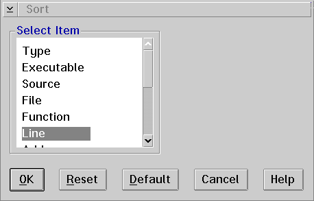

Displays the Sort window, which allows you to sort the breakpoints by the characteristics of the breakpoint.
Use the Sort window to sort the breakpoints that have been set in your program.
Breakpoints can be sorted according to the following categories:
Select the category you want and select the OK push button.